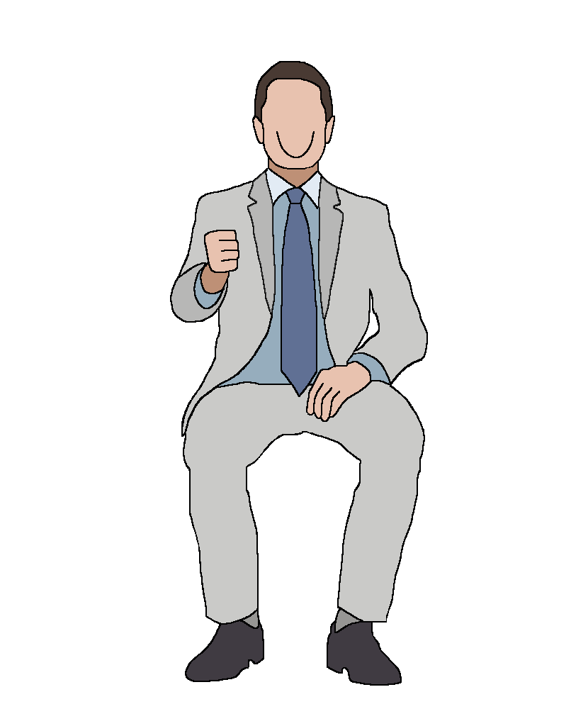
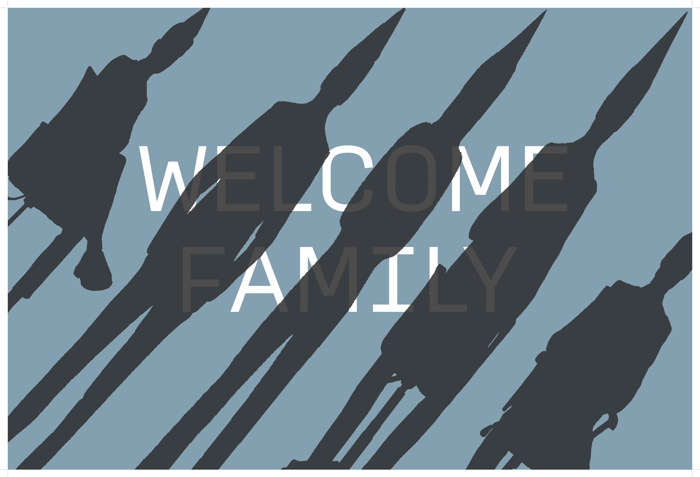
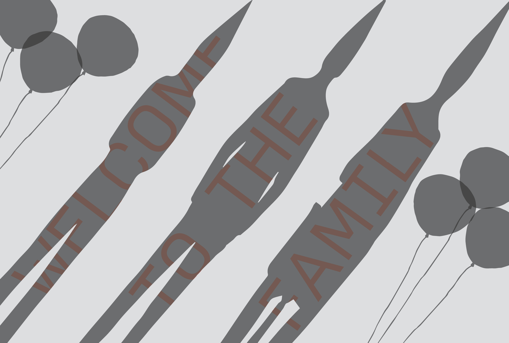
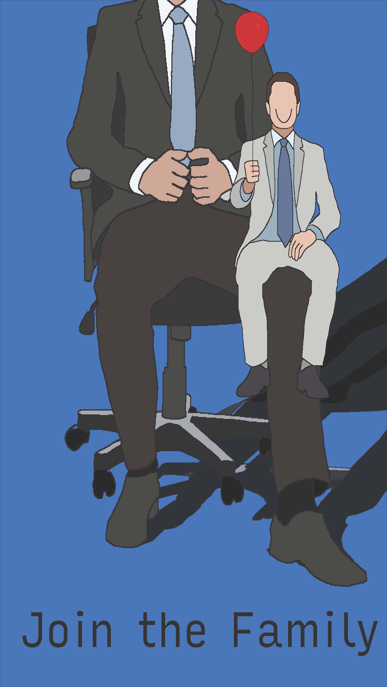

2023 / Poster Illustration
Welcome to the Family
A poster series about work-family culture and the pressure of workplace loyalty.
- Illustrator
- Photoshop
- Poster

Overview
Project description
Welcome to the Family is a series of three posters about work-life balance and the toxic family language workplaces use to demand loyalty.
The posters aim to evoke unease and point to the fake niceties used to normalize overwork. The project draws inspiration from Severance and Sorry to Bother You.
Process
Process
I created this poster series through digital illustration and compositing, using repetition across three designs to build a shared visual language. The process involved exploring how typography, color, and imagery could mimic the artificial warmth of workplace culture while making that surface feel unsettling. The final results required many iterations to see the best version possible.



Poster views
Additional poster images showing the series at full proportion.

